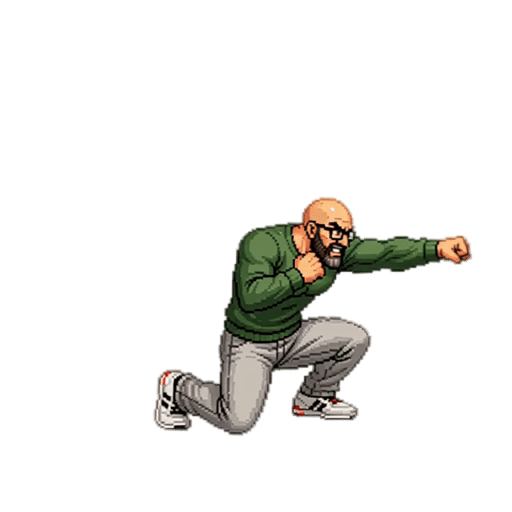
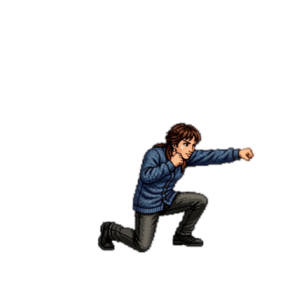
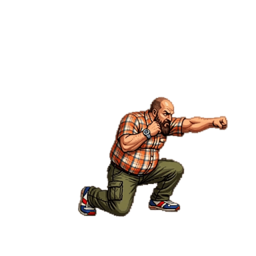
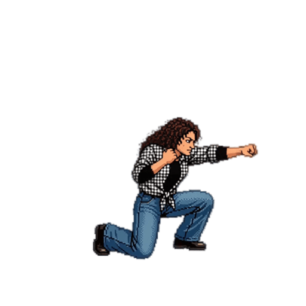
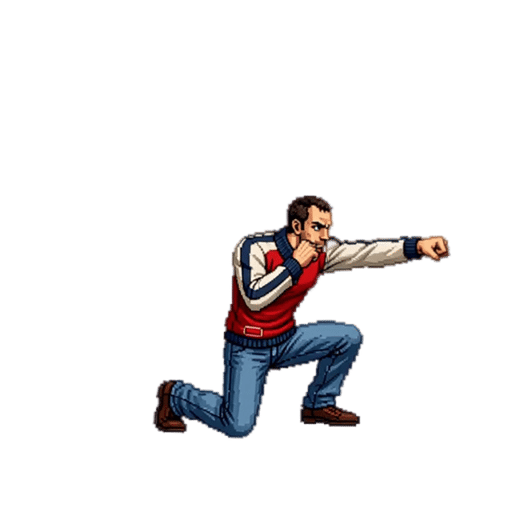
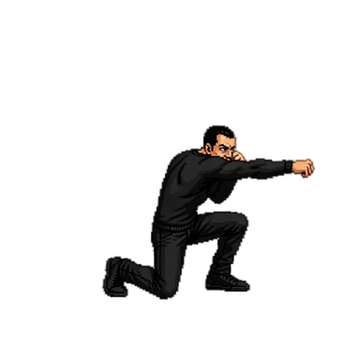
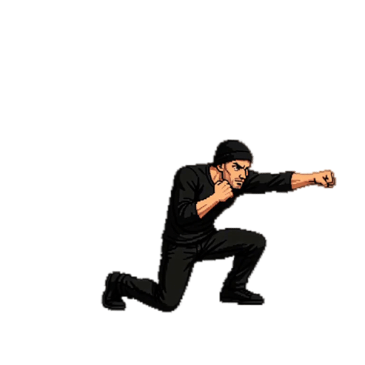
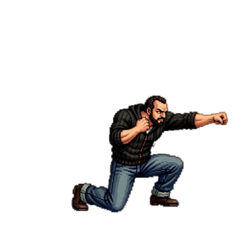
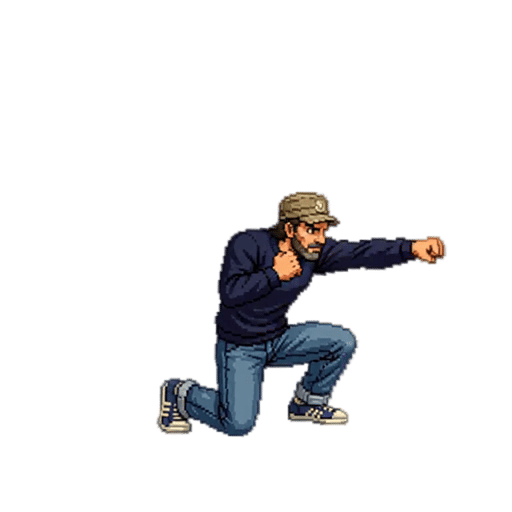

Apri la mossa nella demoPugno leggero basso · Timing
Aggiornamento 22 novembre 2026. Nove personaggi. Stesso timing del Pugno leggero: la posa scelta di massima estensione inizia a 250 ms e il ciclo termina a 500 ms a velocità 1×. Durate variabili prima e dopo il marcatore, senza cambiare ordine o pixel dei frame.
Gli spritesheet contengono già il recupero in guardia accovacciata e sono eseguiti solo in avanti. Loop attivo per default. Versioni trimmed selezionate quando presenti; per Oscar è esportato una sola volta l’intervallo salvato 0–17 del foglio da 30 frame. Le pose estese adiacenti possono differire di pochi pixel: il report mostra il primo frame della massima estensione osservata.
104 celle RGBA confrontate con i PNG sorgente dopo l’esportazione: nessuna modifica a dimensioni, margini interni o scala. Nessuna generazione AutoSprite, 0 crediti.
Scarica i timing CSV
| Personaggio | Impatto | Frame (da 1) | Impatto | Totale | Durata frame prima / dopo | Intervallo sorgente (da 0) | Versione |
|---|
| ALBERTO |  | 4 / 10 | 250 ms | 500 ms | 83.33 / 35.71 ms | 0–9 | Trimmed |
|---|
| Elisa |  | 3 / 9 | 250 ms | 500 ms | 125.00 / 35.71 ms | 0–8 | Trimmed |
|---|
| FABIO-CLARA |  | 4 / 10 | 250 ms | 500 ms | 83.33 / 35.71 ms | 0–9 | Trimmed |
|---|
| FRA-TAVARONE |  | 6 / 11 | 250 ms | 500 ms | 50.00 / 41.67 ms | 0–10 | Trimmed |
|---|
| MARSAN |  | 9 / 14 | 250 ms | 500 ms | 31.25 / 41.67 ms | 0–13 | Trimmed |
|---|
| Oscar |  | 10 / 18 | 250 ms | 500 ms | 27.78 / 27.78 ms | 0–17 | Trimmed |
|---|
| PEPPO |  | 5 / 12 | 250 ms | 500 ms | 62.50 / 31.25 ms | 0–11 | Trimmed |
|---|
| PIPPO |  | 5 / 10 | 250 ms | 500 ms | 62.50 / 41.67 ms | 0–9 | Trimmed |
|---|
| SBOZ |  | 4 / 10 | 250 ms | 500 ms | 83.33 / 35.71 ms | 0–9 | Trimmed |
|---|